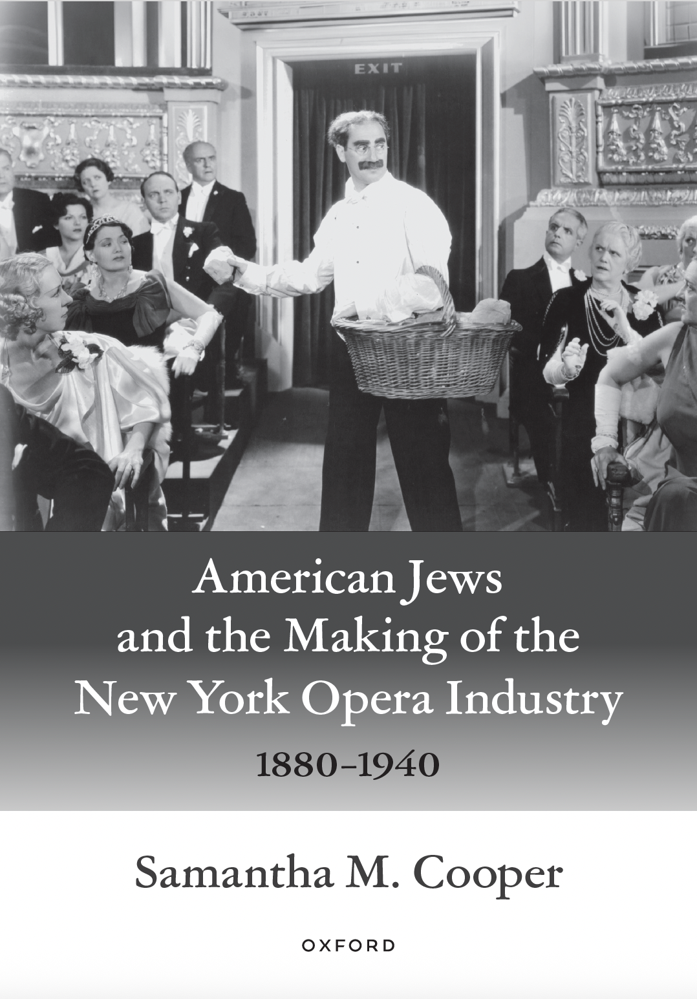
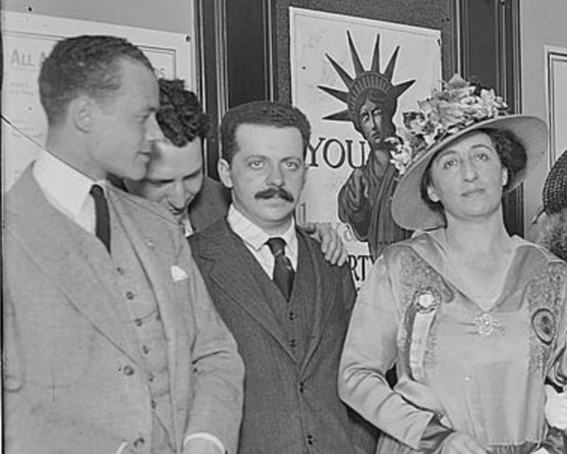
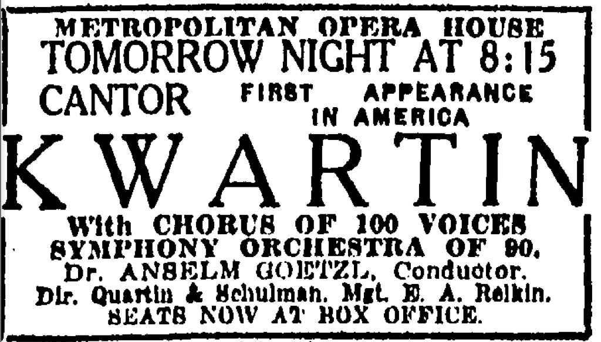
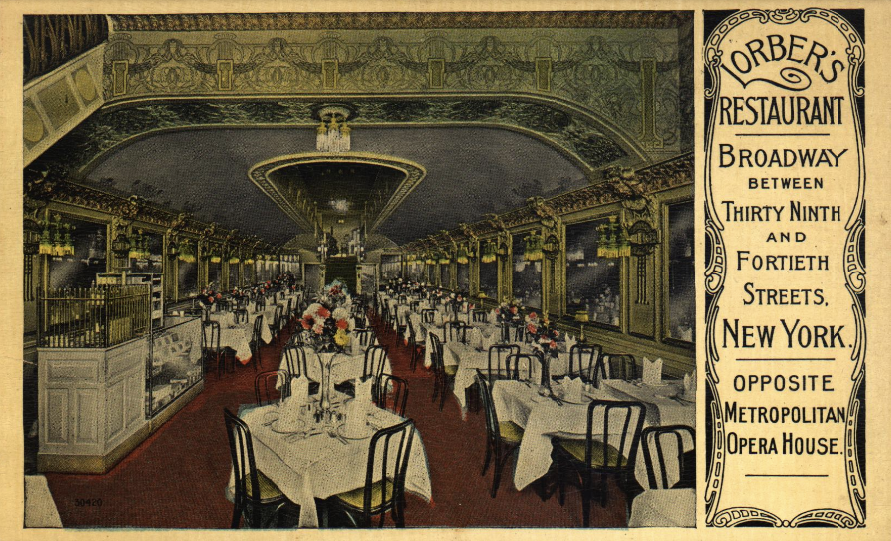

The Jewish Opera Industry Database
A Companion Website for American Jews and the Making of the New York Opera Industry, 1880-1940

About the Book
American Jews and the Making of the New York Opera Industry, 1880-1940 captures the untold story of how and why Jewish New Yorkers became invested in local operatic culture and played a significant role in facilitating its performance. Drawing on English- and Yiddish-language archival and press sources, Samantha M. Cooper reveals how Jewish immigrants from diverse backgrounds became active participants in professional and amateur operatic activities across New York City.
Central to this story is the famed "Old" Metropolitan Opera House, which established New York as the nation's opera capital. Cooper uncovers the centrality of Jewish participation in the opera scene between the Met's founding in 1880 and its sale to the public in 1940. Despite their designation as "undesirable persons" in the Met's By-Laws of March 1900, Jews constituted a substantial portion of the Met's workforce. Outside the Met, Jewish opera activities flourished: Jewish people bought and sold goods and services relating to opera; educated the public about the genre's uplifting power; presented performances in baseball stadiums, Yiddish theaters, and settlement houses; and repackaged opera as popular culture for the masses.
Even as Jewish men, women, and children navigated a climate of institutional antisemitism, they drew on their collective passions, talents, resources, and social networks to leave lasting impacts on the opera industry in the United States. In the process, their involvement with opera also contributed to other musical and theatrical industries. This book shows how Jewish engagement with opera played a vital role in shaping both the American opera scene and the American Jewish experience.
About the Digital Humanities Project
The Jewish Opera Industry Database (JOI; pronounced "Joy") shares the stories of the many Jewish people, events, and places which sustained the New York opera industry during the sixty-year period between the first Metropolitan Opera House’s establishment and its sale to the public. While preparing her book, Cooper meticulously documented the names, birth and death dates, and professions of numerous Jewish individuals involved in the opera industry, from philanthropists and scenic designers to electricians and opera impresarios. She kept lists of those who worked for the Met, the names of Jewish opera box subscribers and audience members, and events for the Jewish community that took place at the Met. She also collected the business names, street addresses, and advertisements of Jewish-owned restaurants that fed hungry opera patrons, Jewish artist managers who secured opportunities for opera singers, and Jewish-led opera companies that competed with the Met. Cooper has built this database to bring the existence, careers, and activities of these Jewish opera lovers to life in a searchable and engaging way.
People

Visit this section to meet some of the Jewish men and women who participated in the New York Opera industry.
Events

Visit this section to explore some of the events that Jewish individuals and organizations hosted and participated in at the Metropolitan Opera House.
Places

Visit this section to uncover the many businesses, services, theatres, and synagogues that supported and sustained opera in New York.
About the Author
Acknowledgements
The Jewish Opera Industry Database is a companion to American Jews and the Making of the New York Opera Industry, 1880-1940, and it would not exist without the support of many individuals and institutions. This project was made possible by the Institute for Digital Research in the Humanities from the University of Kansas, as well as support from the KU Program in Jewish Studies. I am grateful to the many archives, newspapers, and encyclopedias that provided information and images for this project. Public domain images have been obtained through the Library of Congress, Columbia University, and Wikimedia Commons (nonrestricted). The database was built and refined through the work of student research assistants Dalton Hammon, Nina McNay, and Rocco Gallerani. I am grateful for John McEwan and Dave Tell's technical assistance. Any errors or omissions are our own. Corrections and additions to the database are welcome and can be sent to samanthacooper@ku.edu.
Copyright Disclaimers
Images have been used in accordance with Fair Use copyright guidelines. Section 107 of the U.S. Copyright Act states: “Notwithstanding the provisions of sections 106 and 106A, the fair use of a copyrighted work, including such use by reproduction in copies or phonorecords or by any other means specified by that section, for purposes such as criticism, comment, news reporting, teaching (including multiple copies for classroom use), scholarship, or research, is not an infringement of copyright.”